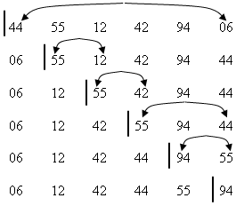

|
|
|
Сначала ищется минимальный элемент в массиве A[1..n] и меняется местами с первым элементом в массиве. Далее находится второй минимальный элемент в массиве A[2..n] и меняется местами со вторым элементом и т.д. Т.е. алгоритм работает по принципу выбора наименьшего элемента из числа несортированных.  Selection_Sort (A [ 1 .. n ] )
1.
2. for i ← 1 to n - 1 3. do imin ← i 4. for j ← i+1 to n 5. do if A [j] <A [imin] 6. then imin ← j 7. temp ← A [imin] 8. A [imin] ← A [i] 9. A [i] ← temp 10. return
Основную составляющую времени представляет количество операций сравнения во внутреннем цикле (строка 6). Это время пропорционально n2 . Количество операций обмена равно n-1. Недостатком сортировки выбором является то, что время выполнения алгоритма мало зависит от упорядоченности массива. На сортировку почти отсортированного файла или файла, где много одинаковых ключей, уходит столько же времени, сколько и на сортировку файла, упорядоченного случайным образом. Однако этому методу надо отдать предпочтение, когда элементы файла имеют большой размер, а ключи занимают небольшой объем. В этом случае затраты на перемещение больших элементов минимальны при небольшой стоимости операций сравнения. |
|
|